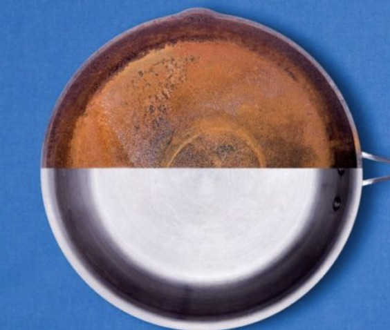

Christie and Chris's Cooking Cabin!

Aside from the products being sold, Christie and Chris's Cooking Cabin offers a large amount of services for the everyday cook. Our main service is teaching users how to properly use, store, and clean our cooking products. These products have certain characteristics that will be damaged if not properly taken care of. The goal of this service is to ensure that the products that you order will be used properly and extend the life of the equipment. Proper upkeep of the products is essential for getting the best out of the product. When signed up for the class, the user will also be sent a two month supply of our cleaning chemicals. Also, if you are to sign up in the next three weeks, we will also add an additional recipe book for free! Through proper use, the items your order, should last a lifetime. We offer three different section time periods. The times and rates are listed below in our rates document.
Also, please make sure to do the following when showing up for a cleaning class:
- Bring ID
- Wear hair back or tied up
- Wear a mask
Another service that we offer is professional cleaning of your products. These products if not cleaned properly have the ability to be damaged from lack of cleaning or improper cleaning. This service is set in place to ensure that the items you own are cleaned to an almost new form. Our cleaning service is highly recommended by our clients. Through our cleaning service, we use environmentally friendly products. The lack of harsh chemical can lead to a better cooking surface on our products. We recommend that these products be cleaned once every two years for customers who have moderate use and cleaned every year for customers who have consistent use. Please use the sheet listed below to schedule a time for a cleaning. We have two cleanings, standard and advanced, each with differing rates and discounts based on the number of products you have cleaned. These rates are listed below in our rates document.
Note:Please sign up TWO WEEKS out from the current date.
We will not be able to process your request if you are to sign up before a two week time slot.
For cleanings please do the following before you drop off your products:
- Remove all surface food
- Rinse off any chemicals that may be on the bottom
- Pack items in boxes with largest on the bottom and smallest on top
- Drop items off at our local store

 Click here to see our rates for lessons and cleanings:
Rates
Click here to see our rates for lessons and cleanings:
Rates
Link to Sign up for teaching lessons and professional cleaning:
Sign-up sheet
If you have any questions please email me and I will be happy to help! Contact